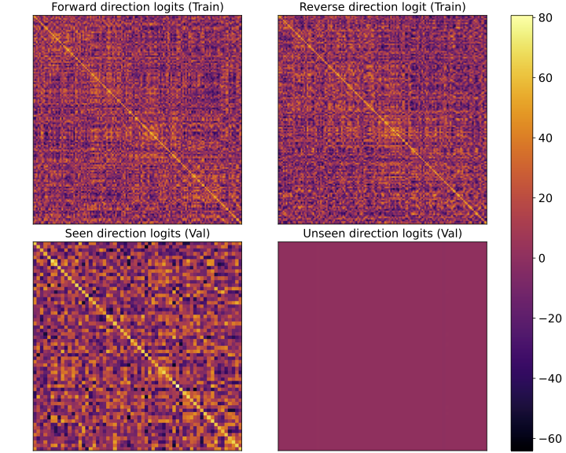

|
Shaolun Zhang I'm a fourth-year undergraduate student at UC Berkeley. |

|
ResearchI'm generally interested in multi-modal LLMs. |
|

|
Training Dynamics of Reversal Curse
Hanlin Zhu*, Baihe Huang*, Shaolun Zhang, Michael Jordan, Jiantao Jiao, Yuandong Tian Stuart Russell Theoretical analysis and empirical results demonstrating asymmetry in model weights leading to the Reversal Curse, where LLMs trained on "A is B" fails to learn "B is A". |